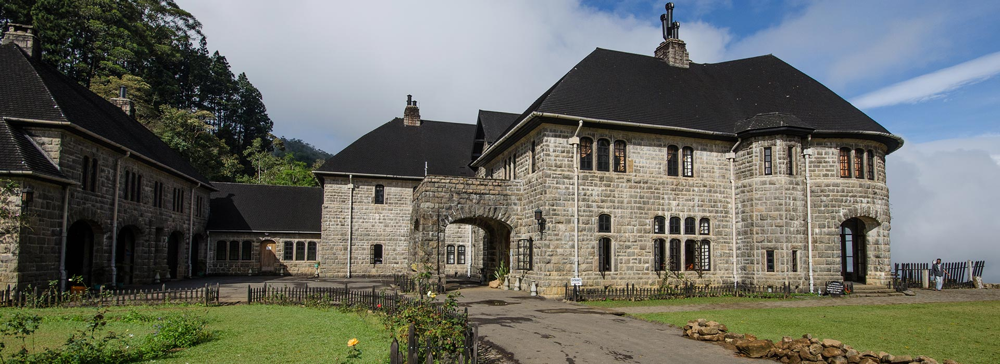

Steeped in colonial elegance, this Tudor-style country house now serves as a serene Benedictine monastery nestled in the mist.
Adisham Bungalow, built in 1931 by the English aristocrat and tea planter Sir Thomas Villiers, is a stunning Tudor-style country house located in the cool hills of Haputale. Designed to resemble a grand English estate, it features intricate woodwork, beautiful gardens, and a rich history that transports visitors back to a colonial era.
After Villiers returned to England, the house was eventually purchased by the Benedictine monks, who converted it into a monastery. Today, it is a place of profound peace, where visitors can explore parts of the historic bungalow, visit the beautiful gardens, and purchase handmade jams and syrups produced by the monks using fruit grown on the estate.
Back to Haputale Hub